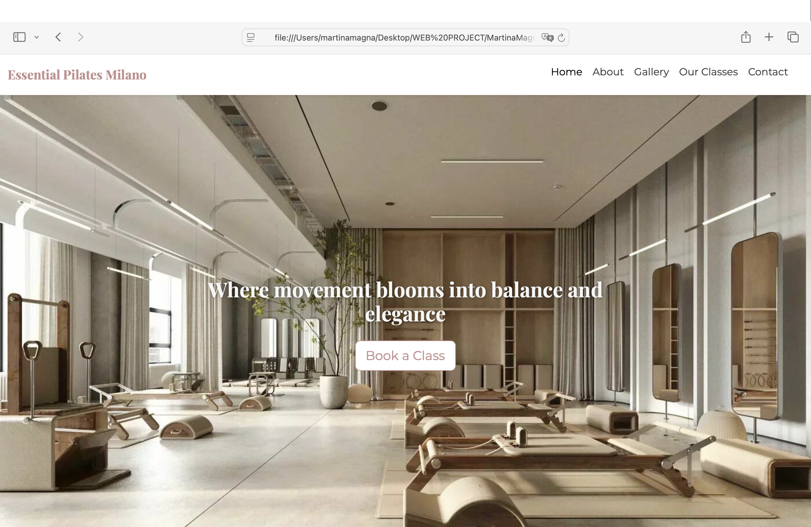
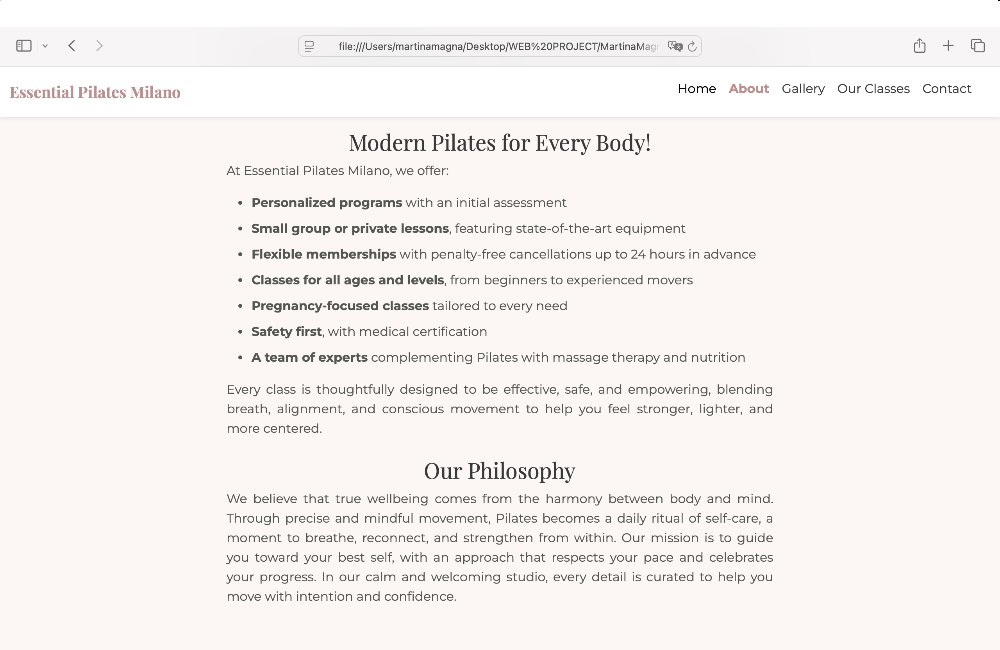
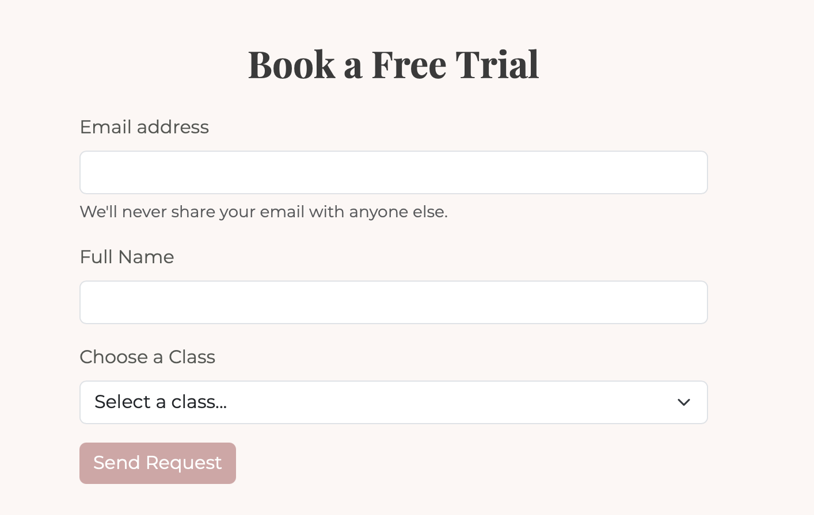
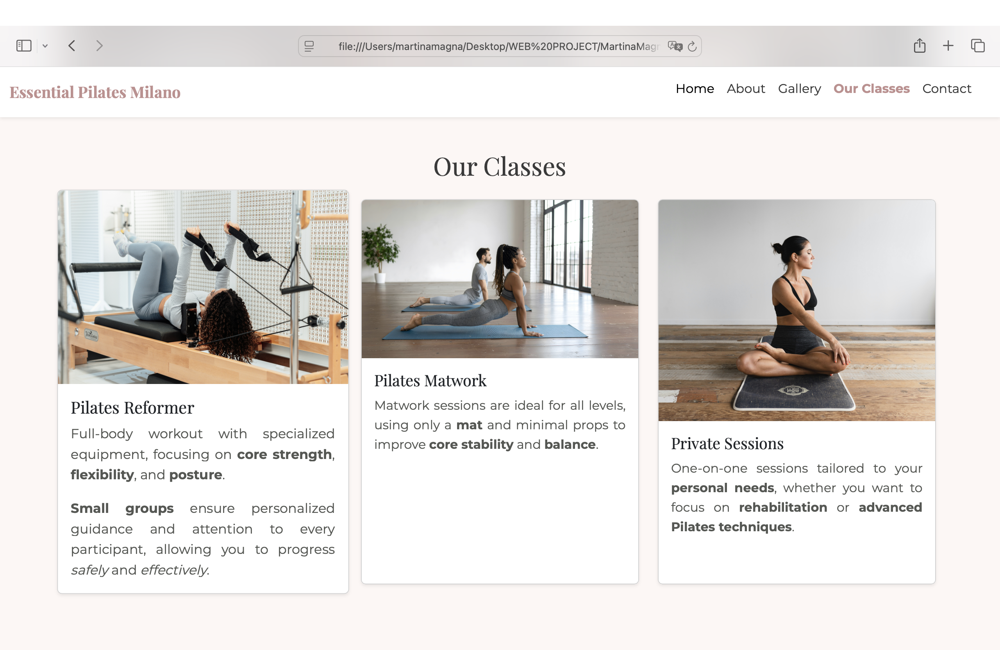

Essential Pilates Milano
Web Communication Project
By Martina Magna

Project Idea
Essential Pilates Milano is a website designed for a modern Pilates studio.
The project aims to communicate a sense of wellbeing through mindful movement, combining elegance, clarity, and a welcoming professional atmosphere.
Target Audience
The website is addressed to adults interested in Pilates, wellness-oriented users and people seeking mindful movement and looking for a calm, high-quality studio experience.

Project Goals
The main goals of the website are:
- Presenting the Pilates studio and its philosophy
- Communicating a coherent brand identity
- Encouraging users to book a free trial class
- Offering a responsive and user-friendly experience
Technologies Used
The project was developed using:
- HTML5 for structure
- CSS for styling and branding
- Bootstrap 5 for layout and responsiveness
- JavaScript for interactivity
- Google Maps Embed for location
Website Structure
The website is structured into the following sections:
- Navigation bar with anchors
- Hero section with call-to-action
- About Us and Philosophy
- Gallery with carousel
Website Structure (continued)
- Our Classes section
- Contact form and map
- Footer and cookie banner

Bootstrap Usage
Bootstrap was used to:
- Manage the grid system (rows and columns)
- Create responsive cards for the “Our Classes” section
- Implement the image carousel
- Style the navigation bar and the form components
Bootstrap Example
<div class="carousel-item">
<img src="./imgs/carousel3.jpg" class="d-block w-100" alt="Pilates Equipment">
</div> 
Custom CSS
Custom CSS was added to:
- Define the color palette (blush pink and neutral tones)
- Select and combine serif and sans-serif fonts
- Create hover effects and transitions
- Maintain visual coherence with the brand identity
JavaScript Features
JavaScript was used to add interactivity:
- Active navigation links while scrolling
- Expandable class cards on click
- Cookie consent banner
JavaScript - Cookies
JavaScript - Our Classes Section

Lessons Learnt
During the development of the project I learned:
- How to build responsive layouts
- How to integrate Bootstrap with custom CSS
- How to manage basic JavaScript interactions
- How to debug layout and script issues
- How to organize a complete web project
Long-Term Development
Possible future developments include:
- Online booking system
- User accounts and personal areas
- Backend and database integration
- SEO optimization
- Accessibility improvements
Why Reveal.js?
Reveal.js allowed me to:
- Create a web-based presentation
- Reuse web technologies (HTML, CSS, JS)
- Publish and share the presentation online
- Blur the line between presentation and website
Conclusion
This project combines design, communication, and technical skills.
The website represents a solid starting point for a real Pilates studio and reflects the objectives of the Web Communication course.
Social Media Strategy
The studio could develop an online presence through: